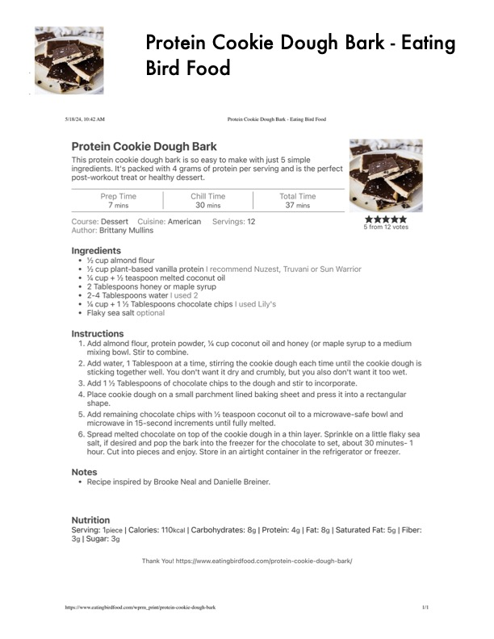

Protein Cookie Dough Bark

Original cookbook page 600
Healthy dessert bark that tastes like cookie dough with protein powder, almond flour, and chocolate chips. Recipe by Brittany Mullins from Eating Bird Food.
Prep: 7 minutes • Cook: 0 minutes • Total: 37 minutes (includes 30 min chilling)
Ingredients
- ½ cup almond flour
- ½ cup plant-based vanilla protein powder (recommended: Nuzest, Truvani or Sun Warrior)
- ¼ cup + ½ teaspoon melted coconut oil
- 2 Tablespoons honey or maple syrup
- 2–4 Tablespoons water
- ¼ cup + 1½ Tablespoons chocolate chips (recommended: Lily's)
- Flaky sea salt (optional)
Instructions
- Add almond flour, protein powder, ¼ cup coconut oil and honey (or maple syrup) to a medium mixing bowl. Stir to combine.
- Add water, 1 Tablespoon at a time, stirring the cookie dough each time until the cookie dough is sticking together well. You don't want it dry and crumbly, but you also don't want it too wet.
- Add 1½ Tablespoons of chocolate chips to the dough and stir to incorporate.
- Place cookie dough on a small parchment lined baking sheet and press it into a rectangular shape.
- Add remaining chocolate chips with ½ teaspoon coconut oil to a microwave-safe bowl and microwave in 15-second increments until fully melted.
- Spread melted chocolate on top of the cookie dough in a thin layer. Sprinkle on a little flaky sea salt, if desired and pop the bark into the freezer for the chocolate to set, about 30 minutes–1 hour. Cut into pieces and enjoy. Store in an airtight container in the refrigerator or freezer.
Recipe #600 from collection